| 69 | M | i |
|
|||
| 70 | F | ii |
|
|||
| 71 | M | iii |
|
|||
| 72 | F | iv |
|
|||
| 73 | F | v |
|
|||
| 74 | M | vi |
|
|||
|
||||||
| 75 | F | vii |
|
31. Joseph James CLAYTON [scrapbook] 1, 2, 3, 4 (John Jack
, Joseph
, Francis
) was born in 1821 in Nelson County, Kentucky. He was adopted. |
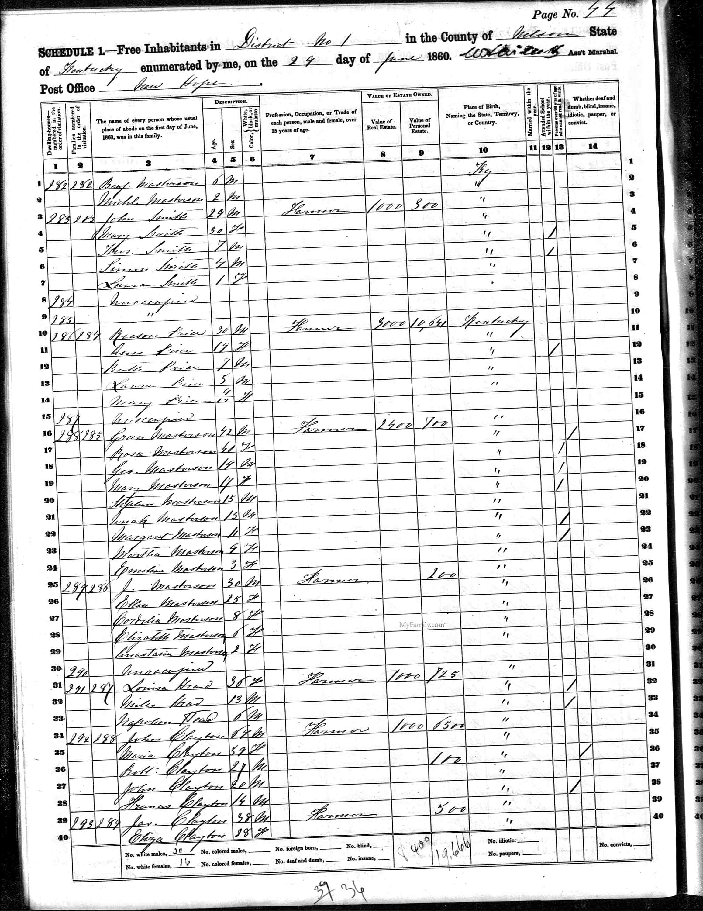 |
Joseph married Eliza. Eliza was born in 1832. |
They had the following children.
69 M i
John CLAYTON was born in 1850 in Nelson County, KENTUCKY.
John was counted in a census 1 in 1860 in Nelson County Ky.70 F ii
Ann C CLAYTON was born in 1852 in Kentucky.
Ann was counted in a census 1 in 1860 in Nelson County Ky.71 M iii
James CLAYTON was born in 1854 in Kentucky.
James was counted in a census 1 in 1860 in Nelson County Ky.72 F iv
Maria CLAYTON was born in 1855 in Kentucky.
Maria was counted in a census 1 in 1860 in Nelson County Ky.73 F v
Ann CLAYTON was born in 1856 in Kentucky. There were other parents.
Ann was counted in a census 1 in 1860 in Nelson County Ky.74 M vi
Thomas CLAYTON [scrapbook] was born in 1858 in Kentucky.
Thomas was counted in a census 1 in 1860 in Nelson County Ky.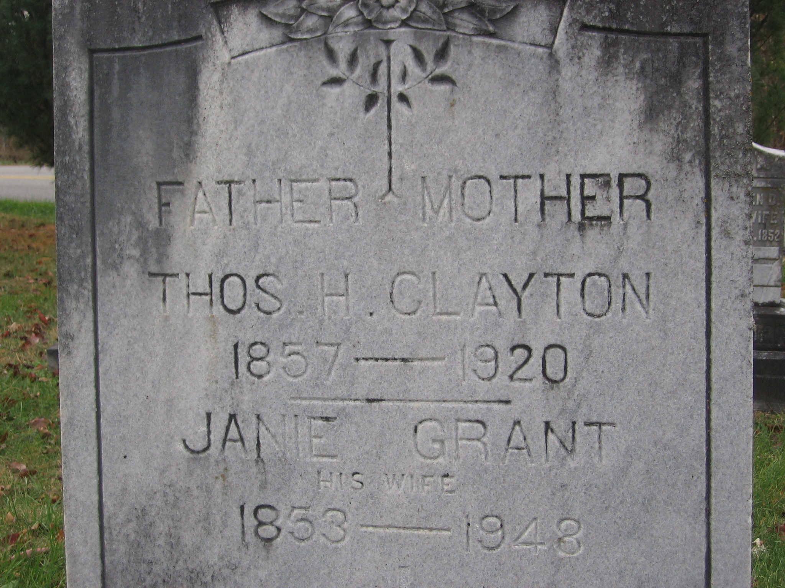
Thomas married Janie GRANT [scrapbook]. 75 F vii
Fannie CLAYTON was born in Sep 1859 in Kentucky.
Fannie was counted in a census 1 in 1860 in Nelson County Ky.
Joseph also married 1 Tempy CRUMPLER on 12 Jul 1841 in ISLE OF WRIGHT. |
32. James C CLAYTON (John Jack
, Joseph
, Francis
) was born in 1821. |
James married Elizabeth BOON, daughter of Elizabeth. |
They had the following children.
+ 76 M i John Gregory CLAYTON was born in Nov 1849.
33. Anna M CLAYTON (John Jack
, Joseph
, Francis
) was born in 1822 in Marion, County, Kentucky. She was adopted. |
Anna married 1 William Joseph FERRIELL "JESSEE", son of John FERRIELL and Elanor BLAIR, on 6 Oct 1849 in NELSON County, Kentucky. |
They had the following children.
34. Mary Juliana CLAYTON [scrapbook] 1, 2, 3, 4 (John Jack
, Joseph
, Francis
) was born on 22 Nov 1823 in Nelson, Kentucky. She died on 25 Apr 1913 in MarION COUNTY KY. She was buried in Holy Cross Cemetery, Marion County, Ky. She was adopted. |
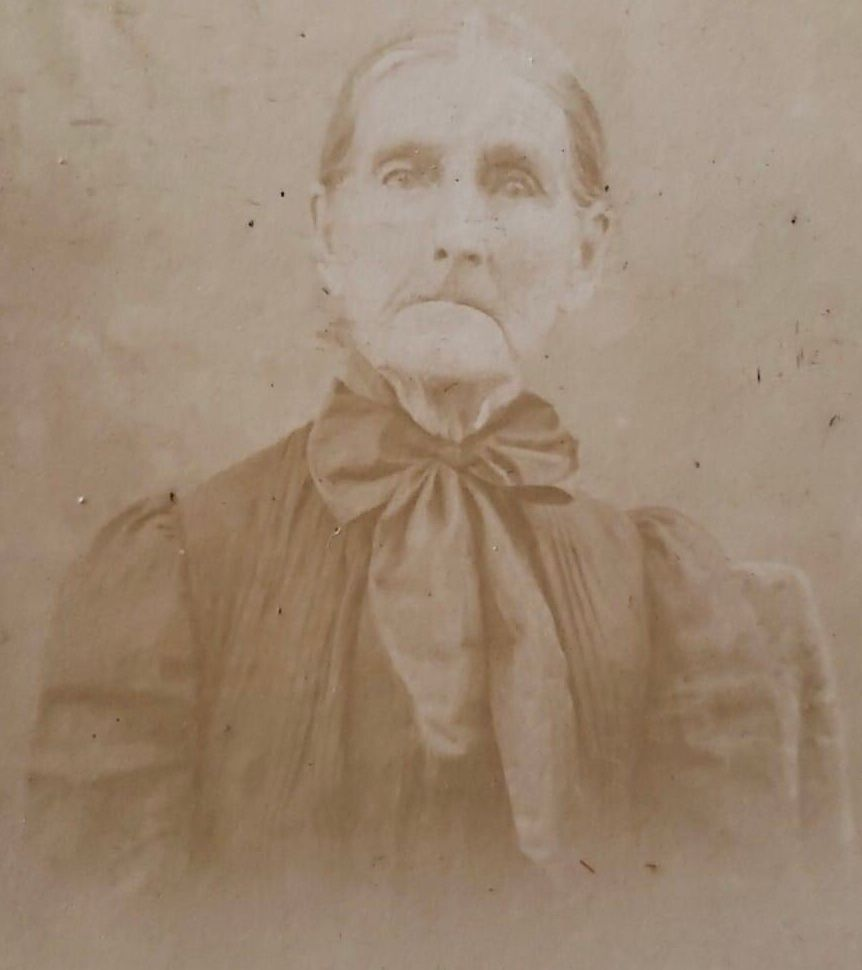 |
Mary married 1 Thomas Samuel FERRIELL on 27 Sep 1842 in MARION COUNTY KY, Kentucky. Thomas was born about 1817 in Kentucky. He died before 1900 in Marion County KY, Ly. He was buried in Holy Cross Cemetery, Marion County, Ky. |
They had the following children.
83 M i
Francis Lemuel FERRIELL was born on 30 Sep 1845 in MARION COUNTY KY, Kentucky. 84 F ii
Ellen Lavina FERRIELL was born on 28 Dec 1847 in MARION COUNTY KY, Kentucky.
Ellen was counted in a census 1 in 1900 in Marion County KY, Ky.
Ellen married Jacob STIVERS on 24 Jan 1873 in MARION CO KY. 85 M iii
Thomas E FERRIELL was born on 2 Sep 1850 in MARION COUNTY KY, Kentucky. He died on 3 Feb 1920 in MARION COUNTY KY, Kentucky. 86 M iv
John Alonzo FERRIELL was born on 1 Jan 1853 in MARION COUNTY KY, Kentucky. He died on 7 Dec 1939 in MARION COUNTY KY, Kentucky. 87 F v
Eliza Jane FERRIELL was born on 3 Feb 1858 in MARION KY. 88 M vi
Samuel Romanus FERRIELL was born in Nov 1860 in MARION KY.
Samuel was counted in a census 1 in 1900 in Marion County KY, Ky.89 F vii
Francis Genevieve FERRIELL was born on 7 Mar 1863 in MARION KY. She died on 20 Feb 1935 in MARION KY.
Francis was counted in a census 1 in 1900 in Marion County KY, Ky.90 F viii
Mary Anatasia FERRIELL was born on 30 Sep 1867 in MARION KY.
Mary was counted in a census 1 in 1900 in Marion County KY, Ky.
35. Latitia Ann CLAYTON [scrapbook] (John Jack
, Joseph
, Francis
) was born on 9 Sep 1827 in Bardstown, Nelson, Kentucky. She died on 28 Jul 1877 in Holy Cross, Marion County, Kentucky. She was buried 1 in 1877 in Holy Cross Cemetery, Marion, Kentucky. |
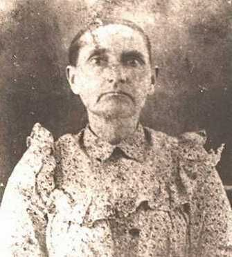 |
Latitia married 1 John Jefferson CISSELL [scrapbook] on 4 Mar 1851 in Bardstown, NELSON County, Kentucky. John was born on 7 Dec 1807 in Bardstown, Nelson County, Kentucky. He died on 10 May 1875 in Bardstown, Nelson County, Kentucky. He was buried in Holy Cross Cemetery, Marion County, KY. |
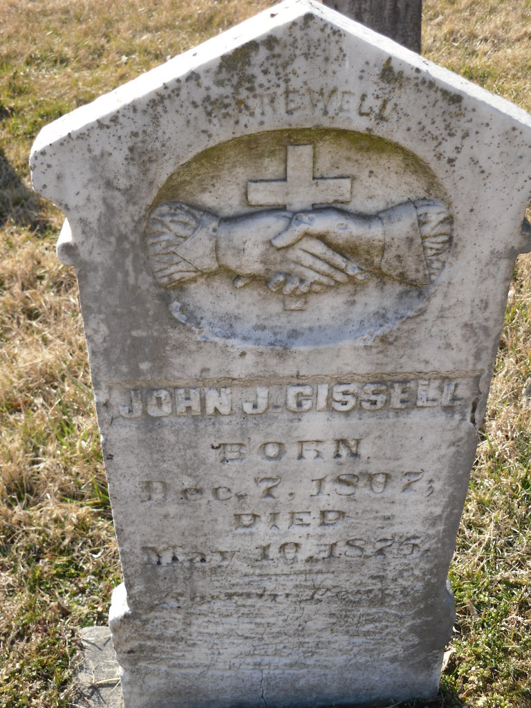 |
They had the following children.
91 F i
Mary Ann CISSELL. 92 M ii
Richard CISSELL was born in 1851. He died in 1923. 93 F iii
Susanna Marie CISSELL. 94 F iv
Elmira CISSELL. 95 M v
Henry Sebastian CISSELL. 96 F vi
Maria CISSELL. 97 M vii
Francis CISSELL. 98 M viii
Charles CISSELL was born on 21 Jul 1859. He died on 3 Mar 1907. He was buried in Holy Cross Cemetery, Marion County, Ky. 99 F ix
Susan CISSELL. 100 M x
Larson CISSELL. 101 F xi
Sarah Jane CISSELL. 102 F xii
June CISSELL. 103 F xiii
Louisa Ellen CISSELL. 104 F xiv
Mary Sidney CISSELL was born in 1866. She died in 1918. 105 M xv
James CISSELL.
37. Mary Melvina CLAYTON 1, 2, 3, 4 (John Jack
, Joseph
, Francis
) was born in 1833 in , , Kentucky. She died in 1936 in Kentucky. She was buried in Holy Cross Cemetery, Marion County, Ky. |
Mary married 1 James Proctor BALLARD on 7 Oct 1851 in Union County, Kentucky. James was born in 1823 in Bardstown, Kentucky. He died in 1870. |
They had the following children.
+ 106 M i Thomas H BALLARD was born on 30 Nov 1853. He died on 21 Feb 1928. + 107 F ii Maria Jane "Ty" BALLARD was born on 26 Jul 1856. She died on 30 Jun 1936. 108 M iii
John Young BALLARD was born on 26 Jul 1859 in NELSON County, Kentucky. He died 1 on 25 Apr 1939 in West Louisville DAVIESS CO KY. He was buried in St Alphonsus Cemetery, St Joseph, Ky. 109 F iv
Mary Tyler BALLARD [scrapbook] was born on 15 Oct 1861 in Nelson County Kentucky. She died 1 on 1 Feb 1956 in Carmel Home Owensboro Kentucky. She was buried on 2 Feb 1956 in St Alphonsus Cemetery, St Joseph, Ky.
Mary was counted in a census in 1880 2 in Daviesss County. Listed as Lizzie She was counted in a census 3 in 1900 in Daviess CO KY. She was counted in a census 4 in 1920 in West Louisville DAVIESS COUNTY, KY.
Live with Dr John M Clayton as a housekeeper. Cousin
Grave indicates born in 1861. 1920 Census indicates born in 1869. (51)Mary never married.
38. Martha Bethany CLAYTON 1, 2, 3, 4 (John Jack
, Joseph
, Francis
) was born in 1837 in , Nelson, Kentucky. She was adopted. |
Martha married James T BROTHERS on 24 Jan 1860 in NELSON County, Kentucky. Martha and James obtained a marriage license 1 from 1858 Marriage License on 5 Aug 1858 in Commonwealth Of Kentucky. They published the marriage banns 2 at Marriage Bond on 5 Aug 1858 in Jefferson County, Kentucky. |
They had the following children.
110 F i
Ophellia BROTHERS was born on 24 Jan 1864 in MARION KY. She died on 16 Feb 1933 in LOUISVILLE, JEFFERSON CO KY.
Ophellia was counted in a census 1 in 1880 in Nelson County, KENTUCKY. She was counted in a census 1 in 1880 in Nelson County, Kentucky.
Ophellia married George ALVEY. 111 M ii
James BROTHERS was born in Sep 1870 in KY.
39. John James CLAYTON [scrapbook] 1, 2 (John Jack
, Joseph
, Francis
) was born 3 on 16 Feb 1840 in Nelson, Kentucky. He died on 12 Mar 1914 in Rector Clay County Arkansas. He was buried in Woodlawn Heights Cemetery. He was adopted. |
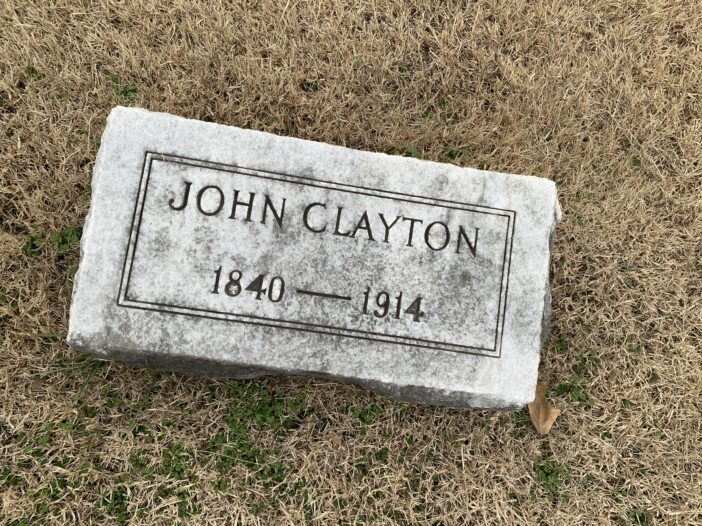 |
John married Frances Fannie BALLARD, daughter of William Proctor BALLARD and Mary GREENWELL, on 16 Sep 1862. Frances was born on 21 Dec 1843 in Marion County, Kentucky. She died on 12 Aug 1887 in McLean County, Kentucky, USA. She was buried in ST BENEDICT CATHOLIC Cemetery, BEECH GROVE, MCCLEAN CO, Kentucky. |
They had the following children.
112 M i
William Edward CLAYTON was born on 26 Jul 1863 in MARION KY. He died in 1897. 113 F ii
Mary Liberta CLAYTON was born on 11 Jul 1866 in MARION KY. 114 M iii
Charles Sidney CLAYTON was born on 10 Mar 1868 in MARION KY. 115 F iv
Carrie C CLAYTON was born in Apr 1870 in NELSON County, Kentucky. 116 M v
Nicholas CLAYTON was born in 1872 in KY. He died in 1894. 117 F vi
Mary Jane CLAYTON was born in 1877 in KY.
40. Nancy CLAYTON [scrapbook] 1, 2, 3, 4 (John Jack
, Joseph
, Francis
) was born on 18 Jun 1842 in Nelson County, Kentucky. She died 5 on 9 May 1923 in St Francis, Marion County, Kentucky. She was buried on 11 May 1923 in Saint Francis Of Assisi, Lebanon, Ky.
|
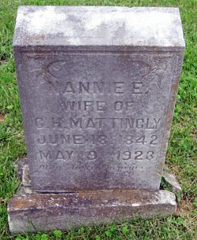 |
Nancy married 1 Robert L BALLARD on 16 Apr 1860 in Bardstown, Nelson County, Kentucky. |
They had the following children.
118 M i
Joseph BALLARD was born in 1863.
Joseph was counted in a census 1 in 1870 in Loretto, Marion, Kentucky.
Nancy also married CHARLES HENRY MATTINGLY [scrapbook] before 1863 in Marion County Ky. CHARLES was born on 25 Oct 1847. He died on 4 May 1910. He was buried in Saint Francis Of Assisi, Marion, Ky.
|
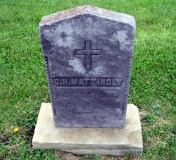 |
They had the following children.
119 F ii
FLORENCE MATTINGLY was born in 1870.
FLORENCE was counted in a census 1 in 1870 in Loretto, Marion, Kentucky. She was counted in a census 2 in 1880 in Loretto, Marion CO, Kentucky.120 F iii
Genevera MATTINGLY was born in 1872.
Genevera was counted in a census 1 in 1870 in Loretto, Marion, Kentucky. She was counted in a census 2 in 1880 in Loretto, Marion CO, Kentucky.121 M iv
Sidney MATTINGLY was born in 1874.
Sidney was counted in a census 1 in 1870 in Loretto, Marion, Kentucky. He was counted in a census 2 in 1880 in Loretto, Marion CO, Kentucky.122 M v
Thomas MATTINGLY was born in 1876. He died in 1927.
Thomas was counted in a census 1 in 1870 in Loretto, Marion, Kentucky. He was counted in a census 2 in 1880 in Loretto, Marion CO, Kentucky.
41. Francis Lemuel "Lem" CLAYTON [scrapbook] 1, 2, 3, 4 (John Jack
, Joseph
, Francis
) was born 5 on 3 Nov 1845 in Bardstown, Nelson, Kentucky. He was christened on 23 Nov 1845 in Holy Cross Catholic Church. He died 6, 7 in 1897 in Owensboro, Daviess, Kentucky. He was buried in 1897 in Elmwood Cemetery, Owensboro, Kentucky.
|
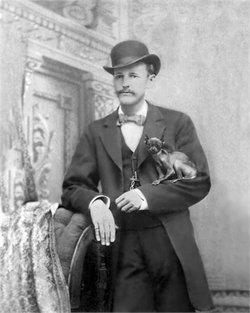 |
Lem married 1 Anna Marie SIMS "Annie" [scrapbook], daughter of Milburn SIMS, on 10 Sep 1874 in OWENSBORO KY. The marriage ended in divorce. Annie was born in 1843 in MARION COUNTY KY. She died on 7 Sep 1891. She was buried on 7 Sep 1891 in St Stephens Cemetery, Owensboro, Ky.
Lem and Annie obtained a divorce 1 on 2 Mar 1877 in Utah. |
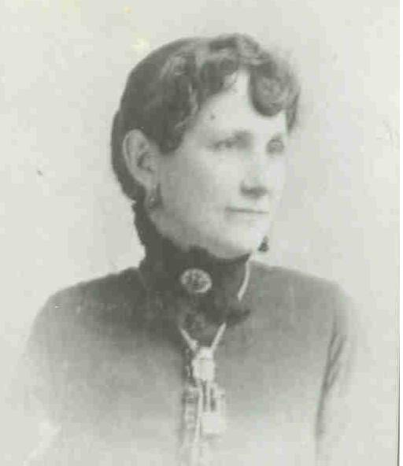 |
They had the following children.
+ 123 M i DR John Milburn CLAYTON was born on 26 Dec 1865. He died on 3 Apr 1951. 124 M ii
Charles L CLAYTON was born 1 in 1869 in Daviess County KY. 125 M iii
William C "WILLIE" CLAYTON [scrapbook] was born in 1870 in Kentucky. He died on 3 Aug 1911 1 in KEY WEST FL.
BIOGRAPHY: LEFT OWENSBORO IN 1896 BECAUSE OF LUNG TROUBLE AND LIVED WITH HIS BROTHER CHARLES. AT THIS TIME ANOTHER BROTHER, JAMES HOWELL, WAS LIVING IN ST LOUIS
WILLIE married 1 Mildred in 1899. They had no children. Mildred was born 1 in 1875 in Illinois. 126 M iv James Howell CLAYTON.
Lem also married 1 Jessie B CUMMINGS, daughter of William CUMMINGS, on 14 Jan 1877. Jessie was born in Feb 1845 in OWENSBORO, Daviess, Kentucky. Lem and Jessie executed a marriage settlement 1 on 1 Oct 1895 in OWENSBORO KY. They executed a marriage settlement 2 on 22 Oct 1895 in OWENSBORO KY. |
They had the following children.
127 F v
Mabel CLAYTON was born on 6 Nov 1879 in DAVIESS CO KY. She died 1 on 2 Mar 1944 in Owensboro KY, DAVIESS COUNTY. She was buried in Elmwood Cemetery, Owensboro, Kentucky. Mabel married C A DRISKILL on 25 Aug 1917 in OHIO COUNTY KY.
Lem also married 1 Nancy Annie ADAMS [scrapbook] about 1890. Nancy was born on 22 Oct 1872 in SPRINGVILLE, Kentucky. She died on 8 Mar 1946 in LOS ANGELES, California. She was buried on 12 Mar 1946 in FORREST LAWNS, California. |
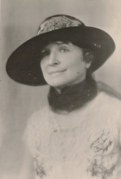 |
They had the following children.
+ 128 M vi Archibald Douglas CLARKE was born on 7 Feb 1891. He died on 2 Apr 1972.
42. James Carlan CLAYTON (Joseph
, Joseph
, Francis
) was born on 1 Nov 1821 in Warren County, Ky. He died on 19 Sep 1871 in Marion County KY, Kentucky. He was buried in Holy Cross Cemetery, Marion County, Ky. |
James married Elizabeth Ellen DAWSON on 17 Jan 1849 in Bardstown, NELSON County, Kentucky. Elizabeth was born on 1 Oct 1829 in Fairfield Nelson County Ky. She died on 12 Sep 1895 in Lebanon, MARION COUNTY KY, Kentucky. She was buried in Holy Cross Cemetery, Marion County, Ky. |
They had the following children.
+ 129 M i John Gregory CLAYTON is printed as #76. 130 F ii
Ann S CLAYTON was born on 7 Jun 1851 in Marion County KY. She died on 14 May 1930 in Nelson County, Kentucky. She was buried in St Joseph Cemetery, Bardstown, Ky.
Ann married James C CECIL in 1870. James was born in 1850. He died in 1913. 131 M iii
James William CLAYTON [scrapbook] was born on 6 Jun 1853 in Louisville, JEFFERSON CO KY. He died on 28 Mar 1921 in Marion County KY. He was buried in Holy Cross Cemetery, Marion County, KY. 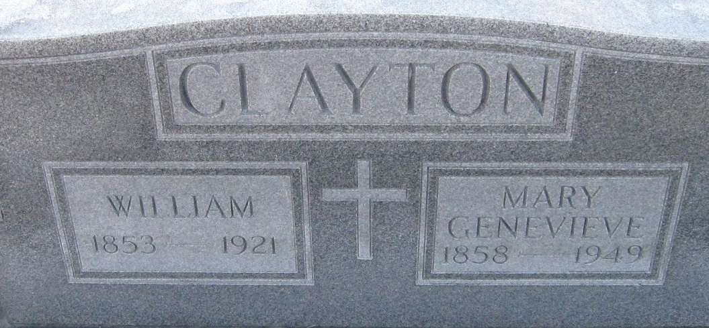
James married Mary Genevieve SMITH. Mary was born in 1858. She died in 1948. She was buried in Holy Cross Cemetery, Marion County, Ky. 132 F iv
Mariah Jane CLAYTON [scrapbook] was born on 29 Jan 1855 in New Haven NELSON CO Ky. She died on 12 Apr 1936 in Marion County KY. She was buried in Holy Cross Cemetery, Marion County, Ky.
Mariah was the daughter of James Carlton Clayton & Mary Ellen Dawson. She married Charles Alfred Blanford on 3 November 1873 & they had 12 children.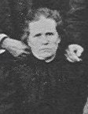
Mariah married Charles Alfred BLANFORD [scrapbook] on 3 Nov 1873. 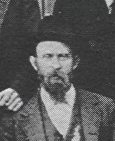
133 F v Ann CLAYTON is printed as #73. 134 M vi
Thomas Hilary CLAYTON [scrapbook] was born in 1857. He died 1 on 2 Nov 1920 in Loretto, MARION CO, KY. He was buried in Holy Cross Cemetery, Marion County, Ky. 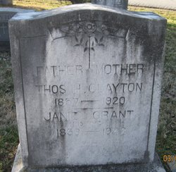
Thomas married Frances Jane GRANT "Janie" [scrapbook] in 1884. Janie was born on 10 Oct 1853 in Jefferson County, Kentucky. She died on 5 Jan 1948. She was buried in Holy Cross Cemetery, Marion County, KY.
Mrs. Fannie J. Clayton
Special to the Courier-Journal
Lebanon, Ky., Jan. 8, --Funeral was held at near-by Holy Cross today for Mrs. Fannie H. Clayton, 94, probably Marion County's oldest citizen, whi was beloved for her many charities.
Mrs. Clayton, who died at her home Monday, was known throughout the county as "Ma" Clayton.
Inscription
FATHER MOTHER
THOS H. CLAYTON
1857--1920
JAMIE GRANT
HIS WIFE
1853-1948+ 135 F vii Frances Malvina "Fannie" CLAYTON was born on 22 Aug 1862. She died on 13 Dec 1924. 136 F viii
Sarah Catherine CLAYTON was born on 3 Jan 1865 in Marion County KY. She died 1 on 11 Nov 1944 in Marion County KY. She was buried in Holy Cross Cemetery, Marion County, Ky.
Sarah married John Milburn SIMMS on 7 Nov 1882 in Marion County, Kentucky. John was born in 1861. He died in 1915. 137 M ix
Joseph CLAYTON was born on 17 Aug 1867 in Marion County, Kentucky.
48. Frank Lemuel "UNCLE FRANK" CLAYTON [scrapbook] (Joseph
, Joseph
, Francis
) was born in Jan 1835 in NELSON COUNTY KY. He died on 9 Dec 1915 in Evansville IN, Indiana. He was buried in St Alphonsus Cemetery, St Joseph, Ky.
|
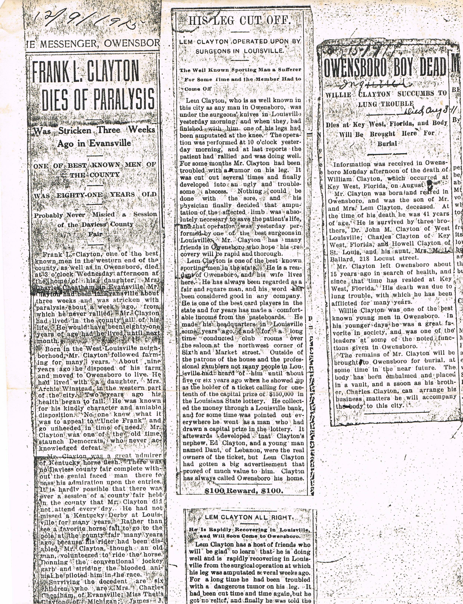 |
UNCLE FRANK married Mary Hosman BARNETT, daughter of James HOSMAN, in Jan 1865. Mary was born on 2 Dec 1835 in Daviess CO KY. She died on 26 Sep 1895 in Daviess County KY. She was buried in St Alphonsus Cemetery, St Joseph, KY. |
They had the following children.
138 F i
Susie CLAYTON [scrapbook] was born in 1866 in DAVIESS CO KY. She died in 1924. 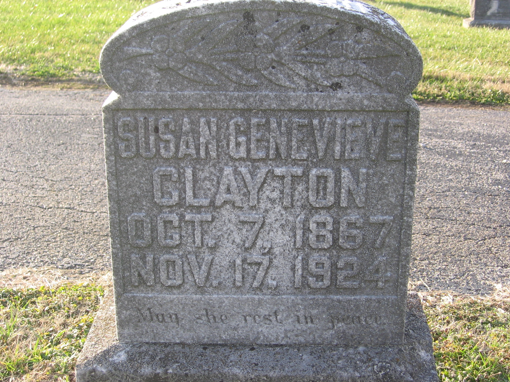
139 F ii
Mary Theodus CLAYTON was born in 1867 in DAVIES COUNTY KY. 140 M iii
James J CLAYTON was born in Jan 1870 in DAVIESS CO KY. + 141 M iv George Francis "FRANK" CLAYTON was born on 18 May 1872. He died on 6 Mar 1954. 142 M v
Stephen E CLAYTON was born on 1 May 1875 in DAVIESS COUNTY KY. He died on 8 Sep 1948 in DAVIESS CO KY. He was buried in MATER DOLOROSA CEMETARY, Owensboro, KY.
Stephen married Mary Jessie MURPHY. Mary was buried in MATER DOLOROSA CEMETARY, Owensboro, Ky. 143 F vi
Martha "MATTIE" CLAYTON was born in May 1878 in DAVIES COUNTY KY. + 144 F vii Martha M "Mattie" CLAYTON was born on 17 Nov 1879. She died on 29 Aug 1964.


{kind=link}
{kind=link}
{kind=link}
{kind=link}
{kind=link}
{kind=link}
{kind=link}
{kind=link}
{kind=link}
{kind=link}
{kind=link}
{kind=link}
{kind=link}
{kind=link}
{kind=link}
{kind=link}
{kind=link}